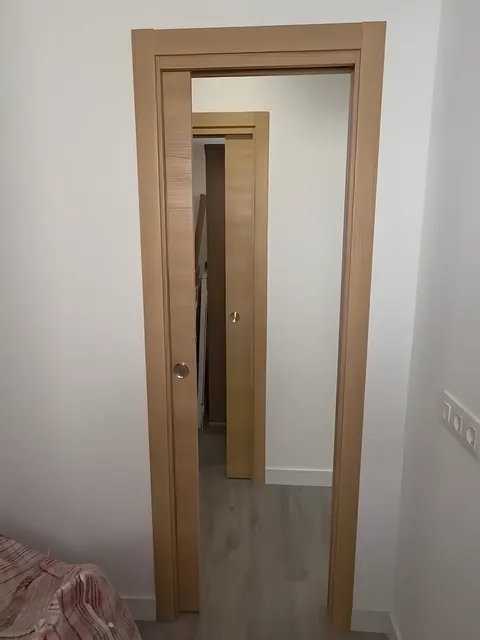
Viviendas
Pisos, casas y bungalows: baños, suelos, puertas, pintura y reformas completas, de la demolición a la entrega.
Las Palmas de Gran Canaria · Toda la isla
Viviendas, locales y comunidades en toda Gran Canaria. Un solo equipo para toda la obra, y cada avance publicado el mismo día en Instagram.
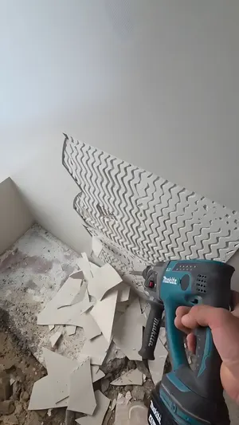
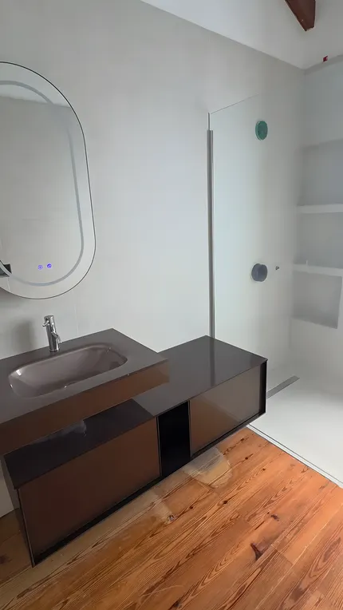
Un baño en el sur de la isla, del día 1 a la entrega en cinco semanas
Un solo equipo
Albañilería, fontanería, pladur, pintura, suelos, electricidad y carpintería. RB se encarga de todo: no tienes que buscar a uno para cada cosa ni coordinar a nadie.
Lo que más nos gusta de nuestro trabajo: que el cliente nos vea trabajar, quede contento y vuelva a contar con nosotros.
RB Obras y Reformas, al entregar una obra en el sur de la isla · 11 de septiembre de 2026

Pisos, casas y bungalows: baños, suelos, puertas, pintura y reformas completas, de la demolición a la entrega.
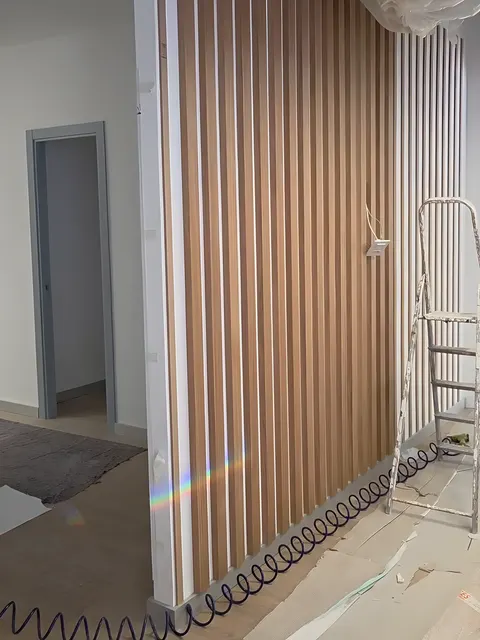
Palillería, paneles, mobiliario, puertas y rampas que cumplen la normativa para abrir el local.
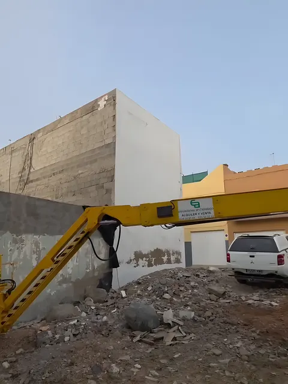
Fachadas, azoteas y patios de luz. Con grúa elevadora donde no llega el andamio.
01 · Baños
Fontanería nueva, plato de ducha de obra impermeabilizado con manta, alicatado y muebles suspendidos.
02 · Suelos
Autonivelante antes de colocar, porcelánico de 1 × 1 m y tarima flotante con goma antitaconeo.
03 · Fontanería
Probada con bomba de presión antes de tapar las rozas, para que todo quede estanco.
04 · Fachadas
Mortero hidrofugante, tubos empotrados y grúa elevadora articulada para las zonas sin andamio.
05 · Azoteas
Corregimos las pendientes con mortero para que el agua vaya al desagüe, sellamos las grietas e impermeabilizamos.
06 · Pintura
Decapamos la pintura suelta y tratamos el hierro oxidado antes de pintar. Primero el problema, después el acabado.
07 · Pladur
Paredes y techos, y refuerzo con madera por dentro donde van a ir muebles y baldas.
08 · Electricidad
Instalación eléctrica, LED en paneles y cabeceros, plafones y lámparas.
09 · Carpintería
Puertas de paso y correderas, armarios empotrados, palillería y montaje de cocinas.
Panel de obras
Así van las obras de RB según lo que publican cada día: dónde están, qué se hizo ese día y en qué punto quedó.
Con sus publicaciones hasta el 5 de noviembre de 2026
Diario de obra
La reforma de un baño en el sur de la isla, tal y como RB la fue publicando: desde el 7 de agosto, cuando arrancó, hasta el 10 de octubre, cuando se puso la grifería de cobre que había elegido el cliente.
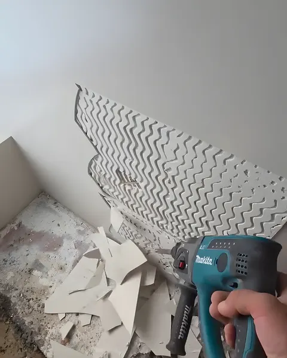
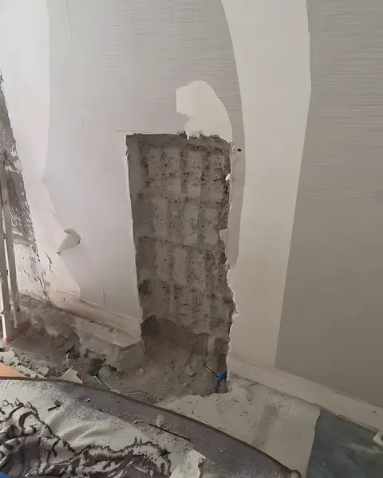
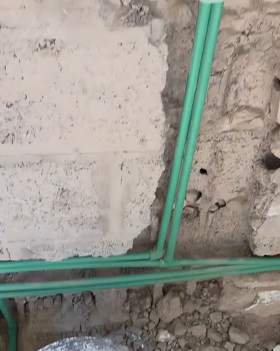
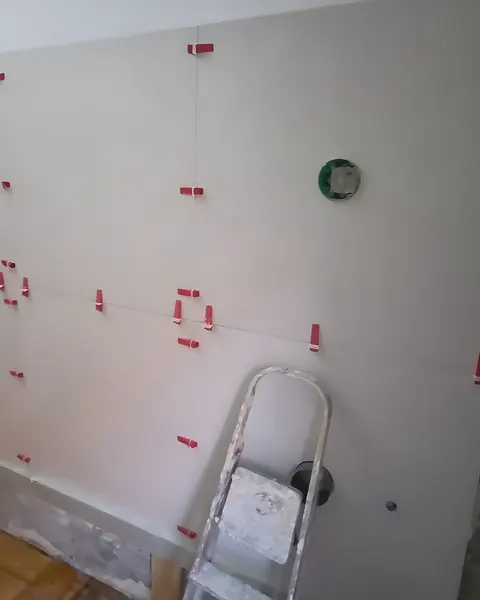
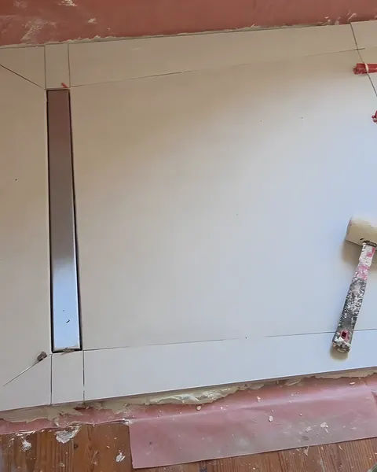
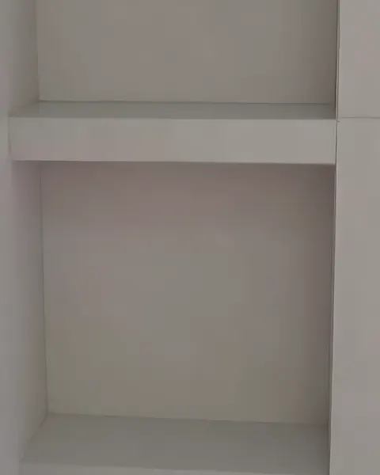
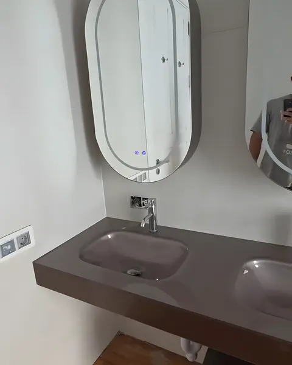
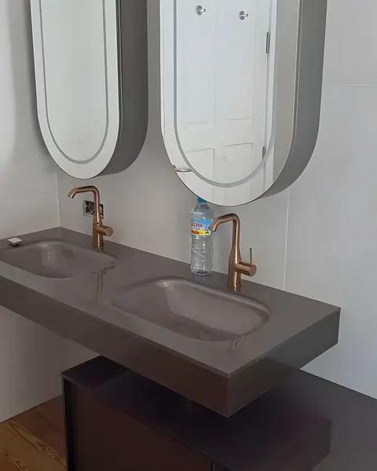
Día 1 · 7 ago
Demolición del alicatado y del plato antiguo para empezar desde cero.
Día 2 · 10 ago
Rozas en paredes y suelo para la instalación nueva en PPR y la cisterna empotrada.
16 y 17 ago
Antes de tapar las rozas comprobamos que todo queda estanco, para evitar pérdidas de agua en el futuro.
19 ago
Con doble encolado: adhesivo en la pared y en la plaqueta, para más superficie de contacto y un agarre fuerte.
22 ago
Revestido, con la caída justa hacia el desagüe lineal e impermeabilizado con manta para evitar filtraciones.
25 ago
Juntas con lechada, hornacinas en la ducha y limpieza completa. Solo quedan los muebles.
10 sep · entregada
Mueble e inodoro suspendidos, espejos con luz y toda la fontanería y el saneamiento nuevos.
10 oct
Cambiamos las griferías provisionales por las de cobre que había elegido. «Nos gusta dejar cada detalle como el cliente lo quiere.»
Carpintería y trabajos a medida
Además de la obra, RB fabrica y monta la carpintería: puertas, armarios, palillería y muebles que encajan en el hueco al milímetro.
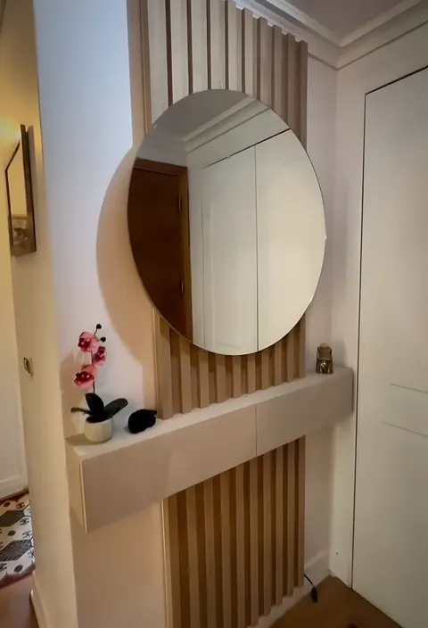
Palillería de madera, espejo redondo y repisa. «La primera impresión también se diseña.»
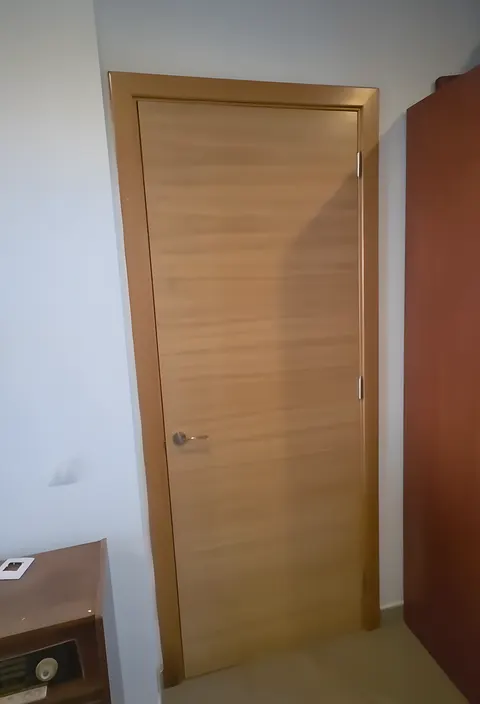
Cuando una puerta estándar no entra, la hacemos a medida: roble enchapado y lacado en tono natural.
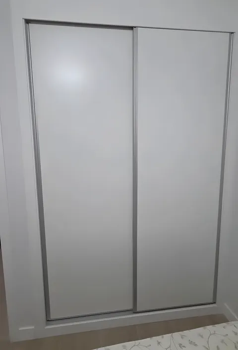
Puertas correderas en aluminio plata, con estantes y cajones adaptados al hueco.
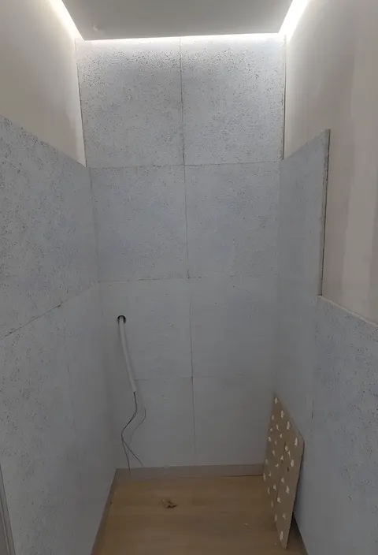
Paredes con palillería y paneles decorativos, y cabinas con luz LED en el techo.
Obras terminadas
Algunas de las obras que RB ha terminado este año, con lo que se hizo en cada una. Toca una para ver sus fotos.
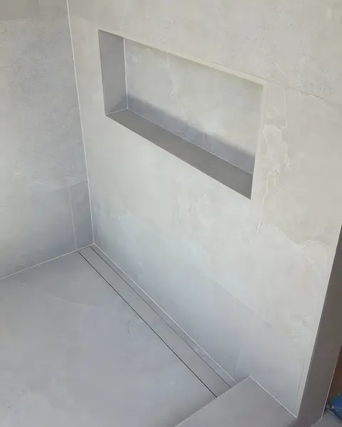
Octubre 2026 · Las Palmas de G. C.
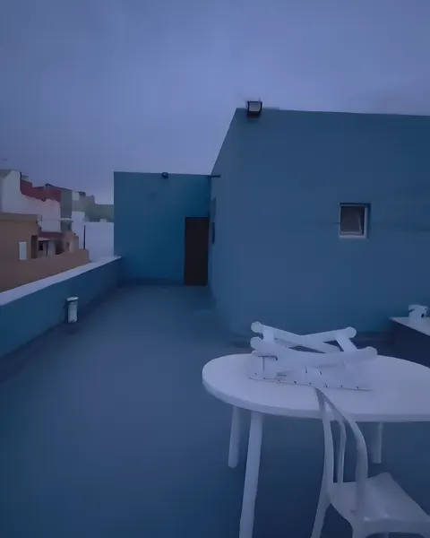
Noviembre 2026 · El Goro · Telde
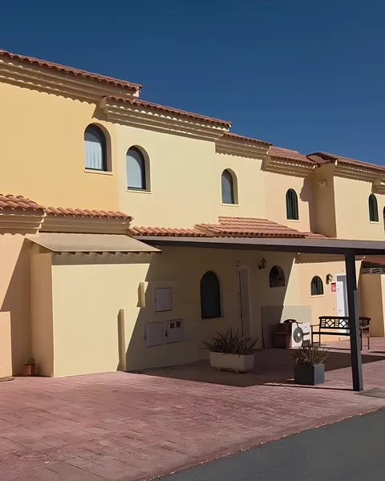
Septiembre 2026 · Sur de la isla
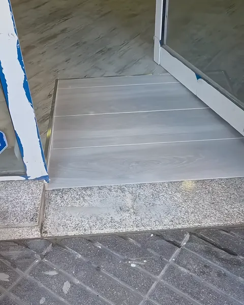
Febrero 2026 · Las Palmas de G. C.
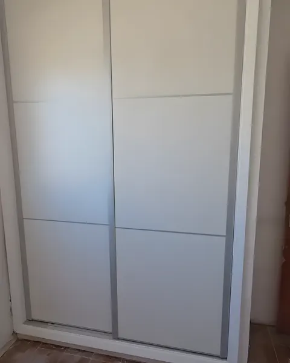
Mayo y junio 2026 · Maspalomas
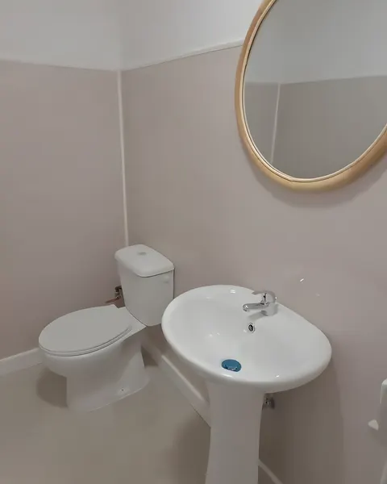
Junio 2026 · Playa del Inglés
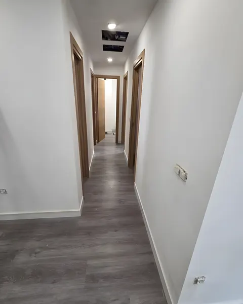
Julio 2026 · Las Palmas de G. C.
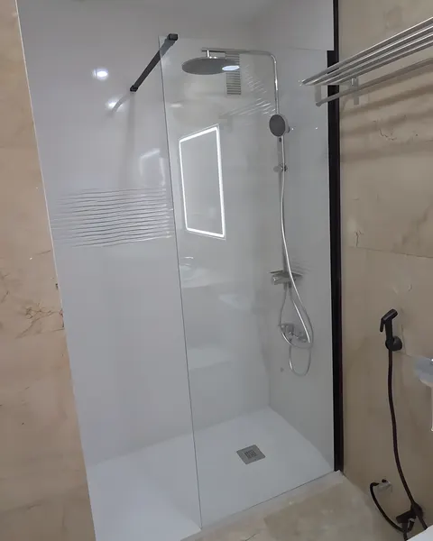
Febrero 2026 · Las Palmas de G. C.
Opiniones
Quedamos muy contentos con el trabajo realizado. Desde el primer momento fueron profesionales, atentos y cumplieron con los plazos acordados. Los acabados quedaron excelentes. Sin duda, volveremos a contar con ustedes.
Muy profesionales y responsables. Nos asesoraron durante todo el proyecto y el resultado superó nuestras expectativas. Buena comunicación, buenos acabados y un trato excelente.
Buena persona, buen equipo, cumplidores en tiempos, buenos trabajos. Un placer conoceros.
Llevo tiempo siguiendo vuestro trabajo en TikTok y me parece muy top. Ahora que ha llegado el momento de ponerme manos a la obra con mi propia reforma, me gustaría solicitaros un presupuesto.
Dónde trabajamos
Base en Las Palmas de Gran Canaria y obras por toda la isla. También trabajos entre islas, según el proyecto y el alcance de la obra.
Presupuestos
Pide tu presupuesto por WhatsApp o por teléfono. Antes de presupuestar vamos a ver la obra y tomamos medidas.